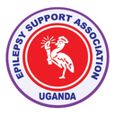
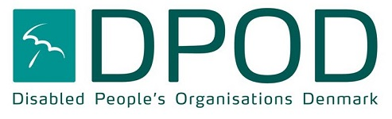
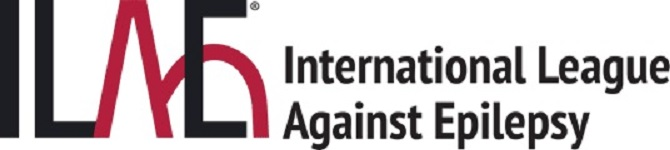
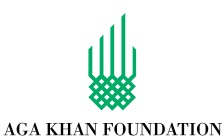

DRF, Light for the World, IAPO, MoH, District LGs, HAG, AGHA, ICOBI, MHU, RHU, BNFU, ADD, UNAPD, NUDIPU, Makerere, Kyambogo, UNAB, UNAD...



Disability Rights Fund
Light For The World
International Alliance of Patients’
Ministry of Health
District Local Governments
Health Rights Action Group
AGHA Uganda
ICOBI
Mental Health Uganda
Reproductive Health Uganda
Joyce Fertility Support Center
BNFU
NACARE
WACC
ADD
UNAPD
ICW
NUWODU
CHAIN
TASO
UNASO
USDC
LAPD
NADB
Makerere University
HURINET
NUDIPU
Kyambogo
UNAB
UNAD